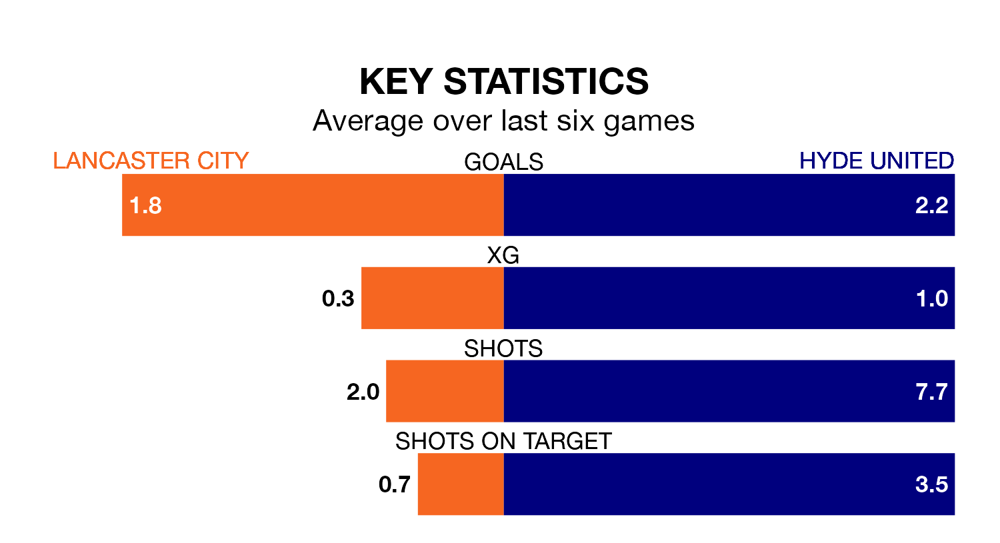

Hyde United face Lancaster City on Saturday seeking to protect their formidable unbeaten run in Northern Premier League.
Hyde are unbeaten in eight, with three wins and five draws, ahead of the 3pm kick-off.
They face a Lancaster team who have won four and drawn two over the same number of games.
With 36 goals in 24 games so far this season, Lancaster are scoring at below the league average rate with 1.5 goals per game. But they are conceding fewer than average too, letting in 31 goals at a rate of 1.3 per game.
Hyde, meanwhile, are above average scorers, with 1.7 goals per game, compared to a league average of 1.6. They have conceded 1.2 goals per game.
United are fifth in the table after 25 games, of which they have won 12 and drawn six, earning 42 points.
City are six places behind the away team in 11th, with 10 wins and six draws putting them on 36 points.
In the last three years, Lancaster and Hyde have played each other on five occasions. Lancaster won four of them and they drew once.
On average, Lancaster scored 1.6 goals and Hyde 0.4 in those matches.
Their last meeting was on September 9, when Lancaster won 3-0 away.
Lancaster's last match was on Tuesday, a 2-1 loss against Radcliffe Borough.
Hyde beat Marine 4-1 last time out, on January 6.
Updated: 10:50, 10/01/24